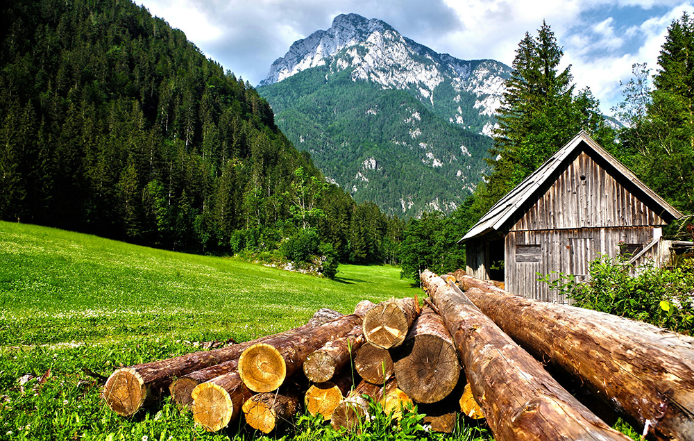
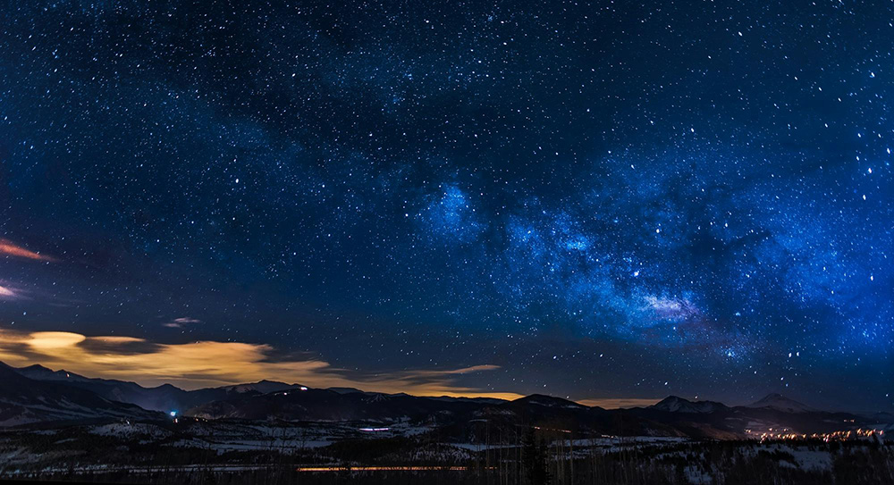
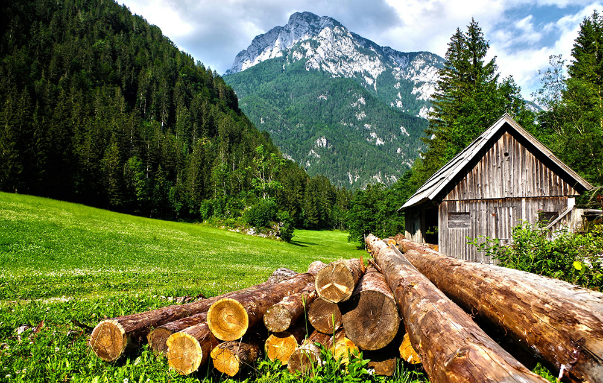
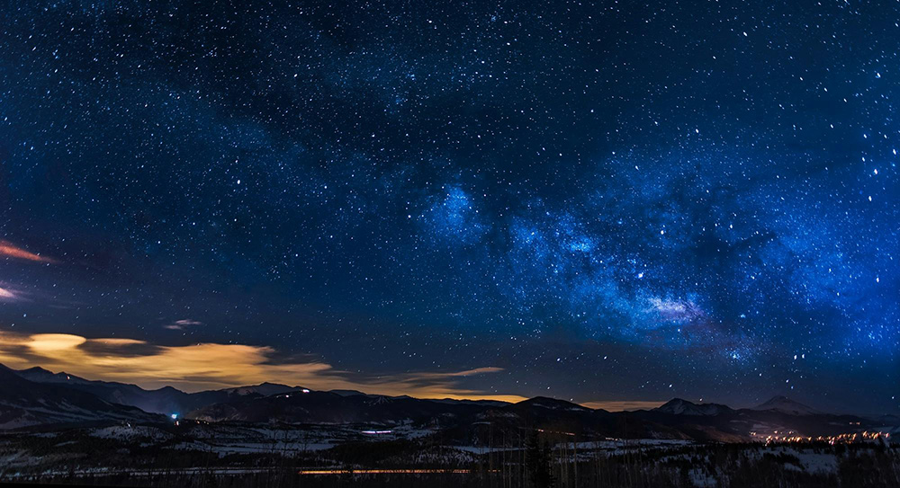

NATURE
Nature is the heartbeat of our planet, offering beauty, balance, and life to all living beings. From towering mountains and vast oceans to quiet forests and blooming meadows, nature provides a sense of peace and wonder that inspires and heals. It sustains us with clean air, fresh water, fertile soil, and nourishing food, while also serving as a home to countless species of plants, animals, and microorganisms. Every part of nature is interconnected—when one element is harmed, the whole ecosystem can be affected.
Nature also plays a vital role in human well-being. Studies have shown that spending time in green spaces can reduce stress, improve mood, and enhance mental clarity. The sounds of birdsong, the rustle of leaves, the scent of flowers, and the sight of a flowing river—all contribute to a deep, calming connection that no artificial environment can replicate.
 Beyond its physical benefits, nature is a powerful teacher. It shows us the value of patience through the slow growth of trees, the importance of resilience through changing seasons, and the beauty of diversity through the variety of life forms. In a fast-paced, digital world, nature invites us to pause, observe, and appreciate the present moment.
However, the natural world is under threat from deforestation, pollution, climate change, and human exploitation. It is our shared responsibility to protect and preserve it—not only for ourselves but for future generations. By living more sustainably, respecting wildlife, and supporting conservation efforts, we can ensure that nature continues to thrive, and in turn, so can we.
Nature is the heartbeat of our planet, offering beauty, balance, and life to all living beings. From towering mountains and vast oceans to quiet forests and blooming meadows, nature provides a sense of peace and wonder that inspires and heals. It sustains us with clean air, fresh water, and nourishing food, while also serving as a home to countless species of plants and animals. In a world often driven by technology and noise, nature reminds us to slow down, breathe, and appreciate the simple, powerful rhythms of life. Protecting and respecting nature is not just a responsibility—it’s a necessity for our future.
Beyond its physical benefits, nature is a powerful teacher. It shows us the value of patience through the slow growth of trees, the importance of resilience through changing seasons, and the beauty of diversity through the variety of life forms. In a fast-paced, digital world, nature invites us to pause, observe, and appreciate the present moment.
However, the natural world is under threat from deforestation, pollution, climate change, and human exploitation. It is our shared responsibility to protect and preserve it—not only for ourselves but for future generations. By living more sustainably, respecting wildlife, and supporting conservation efforts, we can ensure that nature continues to thrive, and in turn, so can we.
Nature is the heartbeat of our planet, offering beauty, balance, and life to all living beings. From towering mountains and vast oceans to quiet forests and blooming meadows, nature provides a sense of peace and wonder that inspires and heals. It sustains us with clean air, fresh water, and nourishing food, while also serving as a home to countless species of plants and animals. In a world often driven by technology and noise, nature reminds us to slow down, breathe, and appreciate the simple, powerful rhythms of life. Protecting and respecting nature is not just a responsibility—it’s a necessity for our future.

Nature is the most precious gift of God to humanity. It includes everything around us — the trees, rivers, mountains, animals, and the sky. Nature is not only beautiful but also essential for life. It provides us with fresh air, clean water, food, and countless resources. Spending time in nature brings peace to our minds and helps us feel more connected to the world. Unfortunately, due to pollution and deforestation, nature is being destroyed. It is our responsibility to protect and preserve nature for future generations. By living in harmony with nature, we can lead a healthier and more meaningful life. Nature is the most beautiful and valuable gift that surrounds us every day, yet we often take it for granted. From the soft rustling of leaves in the wind to the breathtaking beauty of mountains, forests, rivers, and skies, nature fills our world with wonder. It is the source of life, providing us with oxygen to breathe, water to drink, food to eat, and a climate that sustains all living beings.